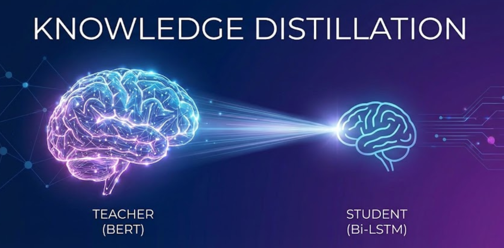
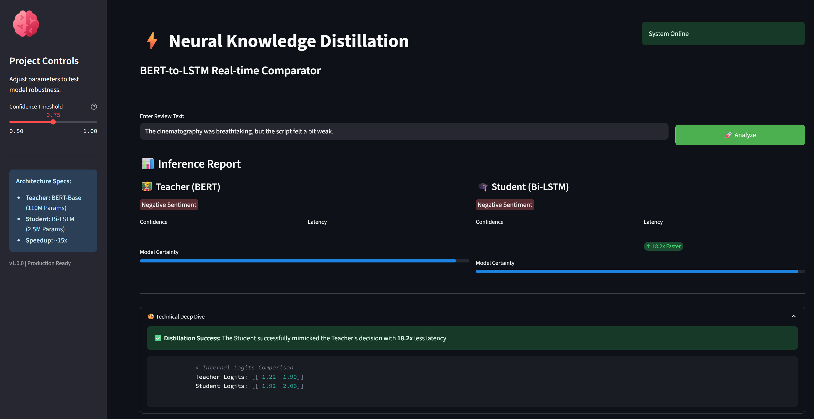

Shrinking Giants: Distilling BERT into a Tiny Bi-LSTM for 14x Faster Inference

We are living in the era of Large Language Models (LLMs). From BERT to GPT-4, the trend has been: “Make it bigger.”
While these giants achieve state-of-the-art accuracy, they come with a massive price tag. A standard BERT-Base model has 110 million parameters and weighs over 400MB. Deploying this on a mobile device or a high-throughput serverless function is a nightmare. You are often forced to choose between high latency (slow user experience) or high costs (expensive GPU instances).
But what if you didn’t have to choose? What if you could take the “brain” of BERT and transplant it into a tiny, ultra-fast network?
This is where Knowledge Distillation (KD) comes in.
In this post, I will explain the concept of KD in detail and then walk you through my recent project where I successfully compressed a BERT model by 17x while speeding it up by 14x, all by teaching a simple Bi-LSTM to mimic the Transformer.
What is Knowledge Distillation?
Knowledge Distillation is a compression technique in machine learning where a small, compact model (the Student) is trained to reproduce the behavior of a large, complex model (the Teacher), or an ensemble of models.
The Process - Dark Knowledge
Normally, we train models on “Hard Targets” (Ground Truth). If we are doing Sentiment Analysis, the label for “I love this movie” is [1, 0] (Positive). The model is told: “This is positive, and there is zero chance it is negative.”
However, a trained Teacher model (like BERT) sees the world with more nuance. It might output probabilities like [0.92, 0.08]. That 0.08 is not just noise. It tells us that while the sentence is positive, there is a hint of negativity or sarcasm. This rich information hidden in the probability distribution is what Geoffrey Hinton called “Dark Knowledge.”
In Distillation, the Student is trained on two objectives simultaneously:
- Hard Loss: Match the actual ground truth (Truth says: Positive).
- Soft Loss: Match the Teacher’s probability distribution (Teacher says: Mostly positive, but slightly ambiguous).
Why use it?
- Massive Compression: You can often replace a Transformer with a simple CNN or RNN, reducing RAM usage by 90%+.
- Inference Speed: Smaller architectures (like LSTMs) are mathematically simpler than Attention mechanisms (\(O(n)\) vs \(O(n^2)\)), leading to lightning-fast predictions on CPUs.
- Edge Deployment: It enables modern NLP on IoT devices, mobile phones, and web browsers where GPUs are unavailable.
Project Spotlight: BERT to Bi-LSTM
For my latest project, I wanted to tackle a real-world production bottleneck: Sentiment Analysis on the Edge.
My goal was to create a model that was accurate enough for production but fast enough for real-time CPU inference.
The Challenge
- The Teacher: A
BERT-Base-Uncasedmodel fine-tuned on the SST-2 (Stanford Sentiment Treebank) dataset. It is accurate but heavy (~420MB). - The Student: A custom Bi-Directional LSTM. It has no attention heads, no massive feed-forward blocks, and weighs only ~25MB.
Could a simple recurrent network really learn from a Transformer?.
📊 The Results
After training the student using a combination of Cross-Entropy Loss (for truth) and KL-Divergence Loss (for the teacher’s knowledge), I achieved a 97% reduction in parameters.
| Metric | Teacher (BERT-Base) | Student (Bi-LSTM) | 🚀 Improvement |
|---|---|---|---|
| Parameters | 109,482,242 | 2,500,000 (Approx) | ~97% Smaller |
| Model Size | ~420 MB | ~25 MB | 17x Compression |
| Inference Latency (CPU) | ~166 ms | ~12 ms | 14x Speedup |
| Throughput | ~6 req/sec | ~83 req/sec | High Scalability |
Benchmarks run on a standard Intel CPU environment to simulate serverless constraints.
As you can see, the Student isn’t just slightly faster—it’s an order of magnitude faster. For a high-traffic API, this effectively means handling 14x more users with the same hardware.
🎥 Live Demo
I built an interactive Streamlit dashboard to visualize the difference. You can type in any sentence and see both models predict it side-by-side.


One fascinating observation from the dashboard is how the Student mimics the Teacher’s confidence. If BERT is unsure about a sentence (e.g., “The movie was okay, I guess”), the Bi-LSTM also tends to output lower confidence scores, proving it learned the “nuance” and not just the label.
Technical Deep Dive
For the engineers reading this, here is how the architecture was set up.
The Student Architecture (Bi-LSTM)
I chose a Bi-LSTM because it processes text sequentially. While it can’t parallelize training like a Transformer, its inference is incredibly efficient because it doesn’t need to compute an \(N \times N\) attention matrix.
| Hyperparameter | Value | Description |
|---|---|---|
| Vocabulary Size | 30,522 | Matches BERT’s WordPiece tokenizer for compatibility. |
| Embedding Dim | 128 | Dense vector representation for input tokens. |
| Hidden Dimension | 256 | The size of the LSTM’s internal memory state. |
| Layers | 2 | Stacked LSTM layers for capturing deeper semantic patterns. |
| Bidirectional | True | Processes text Left-to-Right and Right-to-Left simultaneously. |
The Loss Function
The magic happens in the loss function. I used a weighted average of two losses:
\[Loss = \alpha \cdot L_{soft}(Teacher, Student) + (1-\alpha) \cdot L_{hard}(Truth, Student)\]
- \(L_{soft}\): Kullback-Leibler (KL) Divergence. This measures how different the Student’s probability distribution is from the Teacher’s.
- \(L_{hard}\): Standard Cross-Entropy loss against the gold labels (0 or 1).
- \(\alpha\) (Alpha): A hyperparameter (usually 0.5 or higher) that controls how much we trust the Teacher vs. the Ground Truth.
🛠️ Try It Yourself
I have open-sourced the entire training pipeline, the pre-trained student model, and the dashboard.
1. Clone the Repository
git clone https://github.com/RamuNalla/distillation-BERT-to-LSTM.git
cd distillation-BERT-to-LSTM2. Install Dependencies
pip install -r requirements.txt3. Run the Dashboard
You can run the Streamlit app locally to play with the models:
streamlit run app.py4. Run Benchmarks
To replicate my speed tests on your own CPU:
python benchmark.pyFinal Thoughts
We often equate “larger” with “better” in AI. But for 90% of real-world business problems, “fast and good enough” beats “perfect and slow.”
This project demonstrated that we don’t always need to deploy massive Transformers to get the benefits of their intelligence. By using Knowledge Distillation, we can essentially compress the intelligence of a giant into a model that can run on a Raspberry Pi.
Check out the full code on my GitHub.